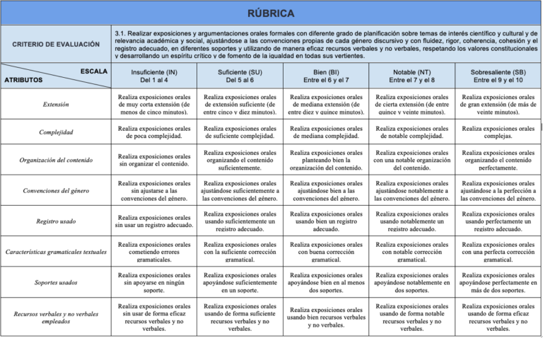
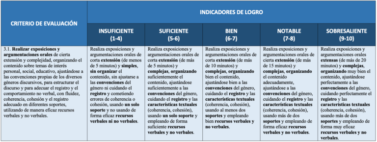
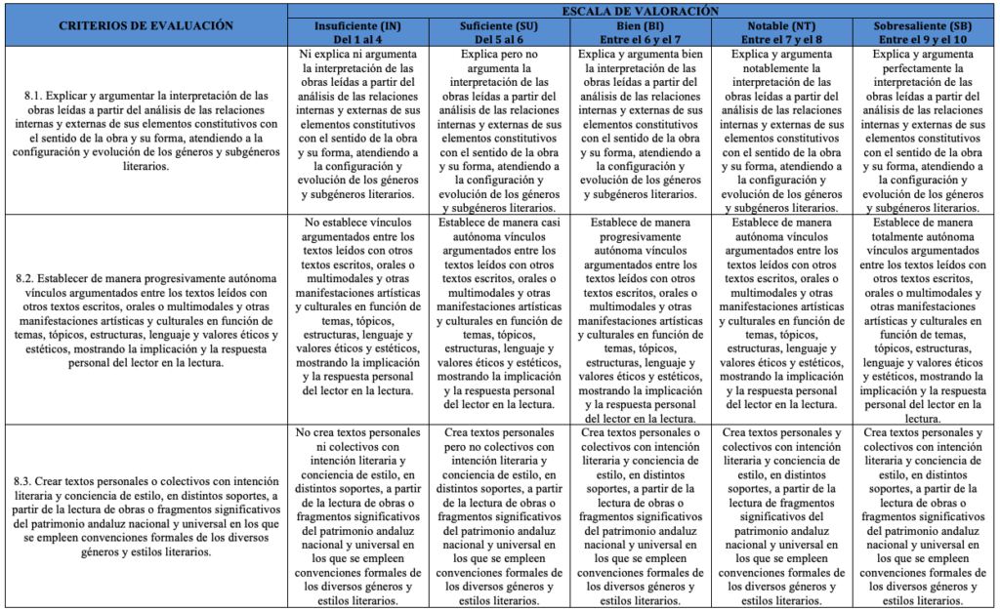

Una forma óptima de llevar a cabo la evaluación del criterio o criterios relacionados con el producto final de una situación de aprendizaje es mediante una rúbrica de evaluación. Y la filosofía en la confección de la rúbrica debe ser la misma que para cualquier instrumento de evaluación: se toma el criterio como punto de partida y referencia principal.
Podemos distinguir varios tipos de rúbricas pensadas para la evaluación criterial:
–La rúbrica analítica: está pensada para evaluar un solo criterio de evaluación, segmentándolo en diferentes atributos o etiquetas. A veces nos encontramos con criterios que se refieren a aprendizajes muy amplios y que abarcan muchas habilidades que, aunque están relacionadas unas con otras, son diferentes. Por ejemplo, en el currículo de Lengua Castellana y Literatura de 1º de Bachillerato (Orden de 30 de mayo de 2023) nos encontramos con este criterio:
3.1. Realizar exposiciones y argumentaciones orales formales con diferente grado de planificación sobre temas de interés científico y cultural y de relevancia académica y social, ajustándose a las convenciones propias de cada género discursivo y con fluidez, rigor, coherencia, cohesión y el registro adecuado, en diferentes soportes y utilizando de manera eficaz recursos verbales y no verbales, respetando los valores constitucionales y desarrollando un espíritu crítico y de fomento de la igualdad en todas sus vertientes.
Pero una exposición oral implica muchas habilidades diferentes: supone aprender a hablar en público, expresarse con un lenguaje adecuado, cuidar el vocabulario que se va a usar, emplear un lenguaje gestual adecuado, usar un buen tono, apoyarse en recursos audiovisuales que enriquezcan la explicación, etc. Se trata, por tanto, de un criterio especialmente amplio. Pues para su evaluación podemos usar una rúbrica en la que midamos este criterio en exclusiva, concretando a nuestro alumnado los aprendizajes implicados a través de los atributos o etiquetas.
Podemos ver un ejemplo de este tipo de rúbrica en la siguiente imagen:

–La rúbrica holística: está ideada para evaluar un criterio de evaluación concreto de una forma global, esto es, considerándolo como un todo, sin segmentar sus partes. En comparación con la rúbrica analítica, cuenta con la ventaja de agilizar el proceso de evaluación, facilitando la selección de un indicador de logro determinado, así como su calificación correspondiente. En cambio, es mucho menos precisa que la analítica y su información es más pobre, pues en su feedback no diferencia con claridad lo que se ha hecho bien o en lo que debe mejorar.
Pero también hay que señalar un inconveniente significativo: los criterios de evaluación, tal y como están redactados en la normativa LOMLOE, son muy amplios conceptualmente e incluyen con frecuencia muchas habilidades que, aunque están relacionadas unas con otras, son diferentes.
Por ejemplo, en el citado criterio de evaluación de Lengua Castellana y Literatura de 1º de Bachillerato que hace referencia a la realización de exposiciones y argumentaciones orales, al mismo tiempo, incluye diversas microhabilidades: la capacidad de hacerlas con cierta extensión, sobre temas complejos, organizar el contenido, ajustarse a las convenciones propias de su género, etc. De tal forma que un determinado alumno / a puede dominar algunas de ellas pero otras no. Por ejemplo, puede organizar el contenido de su exposición realmente bien pero no usar recursos no verbales. Así, alcanzará distintos niveles de logro en las distintas microhabilidades que contiene un mismo criterio de evaluación.
Y en esta forma de rubricar criterios se toma al criterio como un bloque, como un todo, sin que sea posible matizar. Es decir, no permite señalar ni informar al alumno / a qué habilidades en concreto domina y en cuáles puede mejorar. Es un déficit significativo de esta forma de rubricar criterios.
Un ejemplo de rúbrica holística es el siguiente:

–La rúbrica globalizada: es una variante de la holística, pero que sirve para evaluar varios criterios diferentes en una única rúbrica. Por supuesto, la evaluación de cada criterio será diferenciada.
Un ejemplo de rúbrica globalizada es el siguiente:

Fuente: Blog "El loco de la mochila".